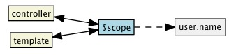
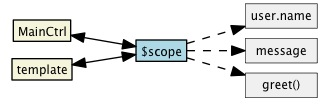
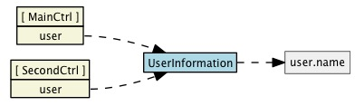

About me
Code Monkey
- Jack of a few trades, master of...
- Lincoln University Graduate
- { Java - C# } + < JS - CSS - HTML />
- Specialising more in heavy "front end"
- Not here to patronize, be gentle!
- Cookies to whoever picks up an accent
So why AngularJS?
Lots of MV* (Model - View - Whatever) type frameworks about
- See ToDoMVC
- Backbone.js
- AngularJS
- Ember.js
- KnockoutJS
-
AngularJS is...
- "HTML enhanced for web apps!"
- Developed from the guys at Google
- Key Names: Miško Hevery, Vojta Jína, Igor Minar
...a complete solution, with testing environment and philosophy behind it...
Trending...
- AngularJS (blue)
- KnockoutJS (red)
- “Single Page Applications” (yellow)
Out of the box...
- ✓ Data binding
- ✓ Templating
- ✓ Extending HTML vocabulary
- ✓ Routing and deep linking
- ✓ Dependency injection
- ✓ Unit Testing (Karma & Jasmine) / E2E Testing
- ✓ Third Party component integration - e.g. Angular-UI Team
What are we trying to fix?
-
<p id="greeting">Hello World!</p> <!-- HTML is great for declarative, static web pages -->
-
<script type='text/javascript'> // Not so good for dynamic pages var isIE = document.attachEvent; var addListener = isIE ? function(e, t, fn) { e.attachEvent('on' + t, fn);} : function(e, t, fn) { e.addEventListener(t, fn, false);}; addListener(document, 'load', function(){ var greeting = document.getElementById('greeting1'); if (isIE) { greeting.innerText = 'Hello World!'; } else { greeting.textContent = 'Hello World!'; } }); </script>
Example: jQuery
<script type='text/javascript'>
$(function() {
var name = $('#name');
name.keyup( function() {
$('#greeting').html( 'Hello ' + name.val() );
});
});
</script>
<label>Name:</label> <input type="text" id="name"> <p id="greeting"></p>
The issues
- Okay for small widgets
- Imperative, not declarative
- Larger web applications = spaghetti code
- Not easily scalable
- Not easily maintainable
- Not easily testable
Choices
Example: Basic Angular App
<html ng-app>
<head>
<script src="lib/angular.min.js"></script>
</head>
<body>
<label>Name:</label>
<input type="text" ng-model="user.name">
<p>Hello {{ userNameStr }}</p>
</body>
</html>
Hello {{ user.name }}
Example: Expressions
<html ng-app>
<head>
<script src="lib/angular.min.js"></script>
<style type="text/css">
.red { color: red; } .green { color: green; } .yellow { color: yellow; }
</style>
</head>
<body>
<label>Colour:</label>
<input type="text" ng-model="colour"></label>
<button ng-click="number = number + 1">Increment</button>
<p class="{{ colourNameStr }}">Number: {{ numberNameStr }}</p>
</body>
</html>
Number: {{ number + 0 }}
Data Binding
- Simple & recognizable
- HTML is the view / template
- Two way data binding
- $scope is the glue between view and model
- $scope != the model


Example: Controllers
<html ng-app="myApp">
<head>
<script src="lib/angular.min.js"></script>
<script src="lib/controller.js"></script>
</head>
<body ng-controller="greetCtrl">
<label>What's your name?:</label>
<input type="text" ng-model="user.name"></label>
<button ng-click="greet()">Greet me!</button>
<p>{{ messageNameStr }}</p>
</body>
</html>
var app = angular.module('myApp',[]);
app.controller('greetCtrl', function($scope) {
$scope.greet = function() {
$scope.message = "Hello, " + $scope.user.name;
};
});
{{ message }}
Directives
-
<body> <div id="chart"></div> </body> <!-- 30 Javascript files later... --> <script type='text/javascript'> $('#chart').pieChart( { ... } ); </script> -
VS
<body> <pie-chart width="400" height="400" data="myData"></pie-chart> </body>
Types of Directives
Built-in directives
- ng-app
- ng-controller
- ng-model
- ng-click
- ng-show
- ng-hide
- ng-src
- ng prefix for "angular"
- ...
<button ng-click="show = !show">Show</button> <div ng-show="show"> I am only visible when show is true. </div>
I am only visible when show is true.
ng-repeat
-
app.controller('JapaneseCarCtrl', function($scope) { $scope.cars = [ { name: "Civic", make: "Honda" }, { name: "MX5", make: "Mazda" }, { name: "Skyline", make: "Nissan" }, { name: "MR2", make: "Toyota" } ]; }); -
<div ng-controller="JapaneseCarCtrl"> <ul> <li ng-repeat="car in cars"> {{ japCarNameStr }} </li> </ul> </div> -
- {{ car.name }} by {{ car.make}}
Build your own Directives!
-
Attribute: <span my-dir="exp"></span> Element: <my-dir></my-dir> Class: <span class="my-dir: exp;"></span> CoMment: <!-- directive: my-dir exp -->
-
<script type='text/javascript'> app.directive('superMan', function() { return { restrict: "E", // Denotes the types suggested above replace: true, template: "<div>It's a Bird...It's a Plane...It's Superman!</div>" } }); </script> <super-man></super-man> -
Services
Default services include; $scope, $http, $timeout, see below for custom services:

app.controller('MainCtrl', function($scope, UserInformation) {
$scope.user = UserInformation;
});
app.controller('SecondCtrl', function($scope, UserInformation) {
$scope.user = UserInformation;
});
// Other ways to create services include app.service & app.provider
app.factory('UserInformation', function() {
var user = {
name: "Angular.js"
};
return user;
});
Leverage the community!
Further reading...


<Thank You!>
<Questions?>
Built using io 2013 slides